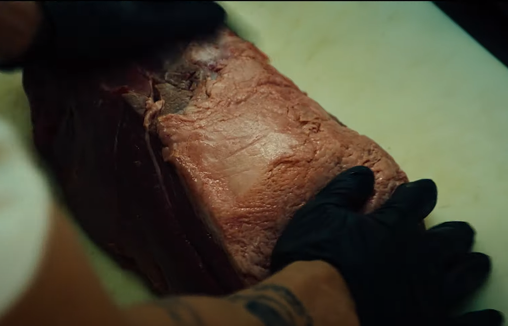

The Bear

Environmental impact of animal meat
- Heller et al. (2018)
- Meats contributed to 56.6% of the total GHGE (measured in CO2 eq. per day) across all 1-day self-selected diets of Americans between 2005-2010
- 595,514 metric tonnes of CO2 eq. per day of GHGE, making meats the highest emitter across all food groups in the US between 2005-10.
Faking the Bear!
Is faking it, making it?: Analyses of the impacts of Plant-Based Meat access
Venkatesh Subramanian
April 24, 2024
For PPPE 6367: Environmental Economics
Hypothesis
ü™¥üëç ‚û°Ô∏è‚û°Ô∏è ü•©üëé
- Construct: Access to Plant-Based Meat(PBM) reduces consumption of animal meat.
- Operationalization: Availability of PBM products in a retail store in a MSA reduces retail purchase of animal meat products in households in that MSA.
When PBMs came to market earlier this decade it came out only in certain exclusive stores. This gives me variation in treatment.
Construct validity
| Variable | Construct | Operationalization |
|---|---|---|
| Independent | “Access to Plant-Based Meat” | “Availability of PBM products in a retail store” |
| Dependent | “consumption of animal meat” | “retail purchase of animal meat products” |
Sampling issues
- Scanner data from NielsenIQ
- Consumer Panel data: Household level
- Retail Scanner data: Store level
Available from Booth School of Business linked here.
Methodological issues
$$\begin{align} \text{Animal Meat Purchase}_{mt} =& \beta_{t} \text{Plant-Based Meat Access}_{mt} \\&+ \delta_t + \mathbf{X_mt \lambda } + \epsilon_{mt} \end{align}$$
- $m$ denotes a MSA
- $t$ is weeks
- $\delta_t$ is week FE
- $X_{mt}$ is a matrix of control covariates
- $\epsilon_{mt}$ errors are clustered at a MSA-time level.
But what ought to be in $X_{mt}$ ?
What covariates do you think I should match on? üó£Ô∏è
Matching covariates
- At a MSA-Week level what changes?
- Weather in the MSA in that week
- In-store display status of PBM products
- Insert-other-interesting-covariates-here
Showing plausibility of conditional ignorability
- As in: West, Thales AP, et al. “Potential conservation gains from improved protected area management in the Brazilian Amazon.” Biological Conservation 269 (2022): 109526.

Representation of results
- Again, as in: West, Thales AP, et al. “Potential conservation gains from improved protected area management in the Brazilian Amazon.” Biological Conservation 269 (2022): 109526.

Further research
- Lobbying group - The Good Food Institute
- “public support for the alternative protein ecosystem has likely surpassed $1 billion”
- Cultivated meat technology
Is faking it, making it?: Analyses of the impacts of Plant-Based Meat access
Venkatesh Subramanian
April 24, 2024
For PPPE 6367: Environmental Economics
Thank you!